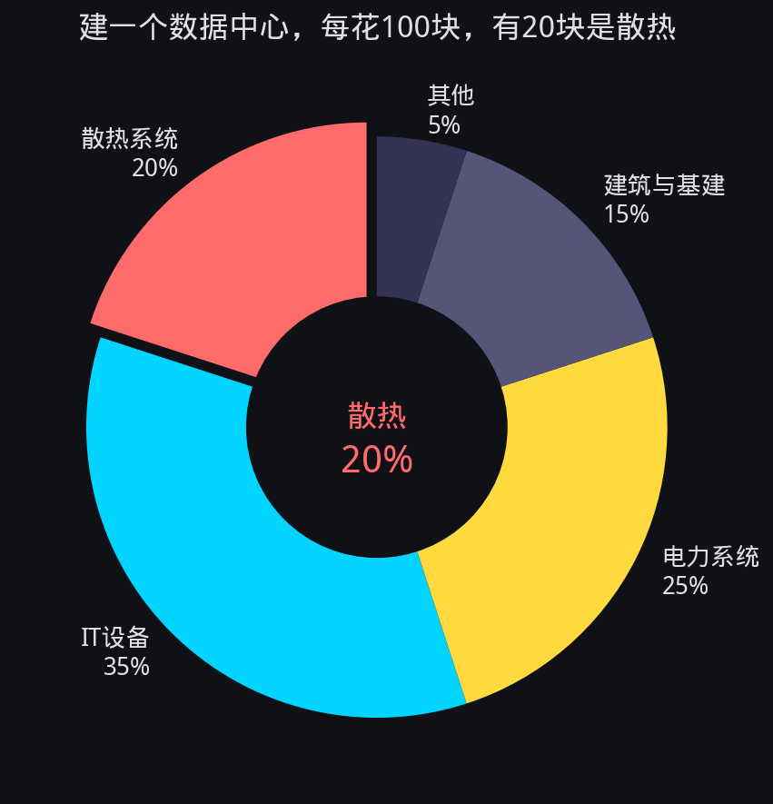
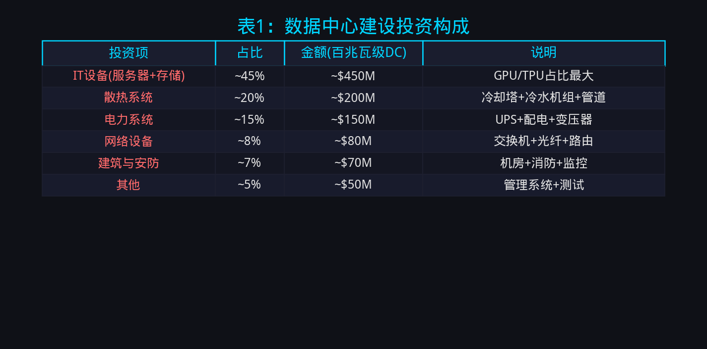
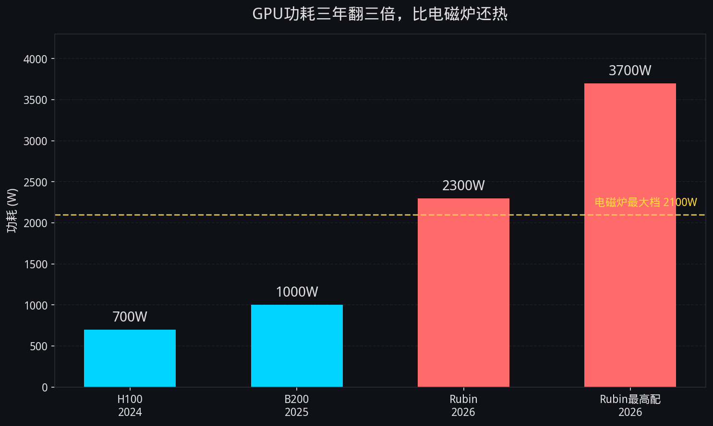
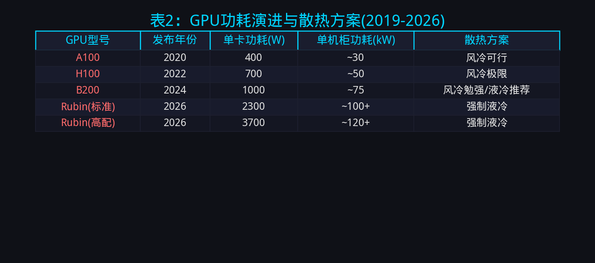
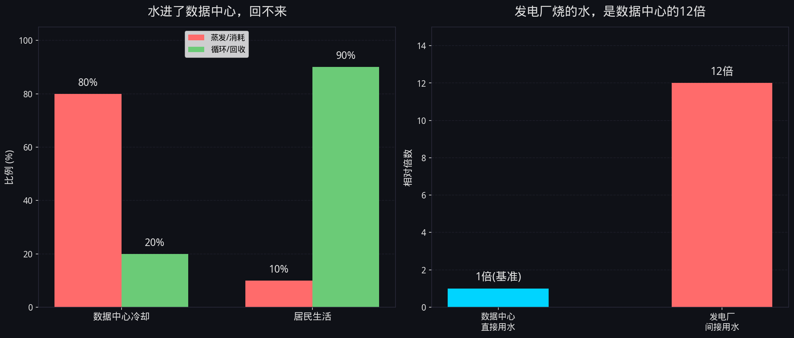
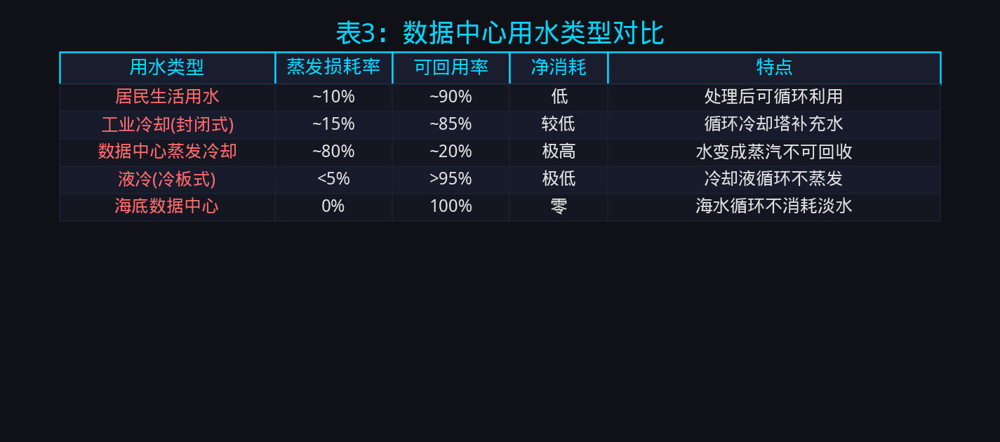
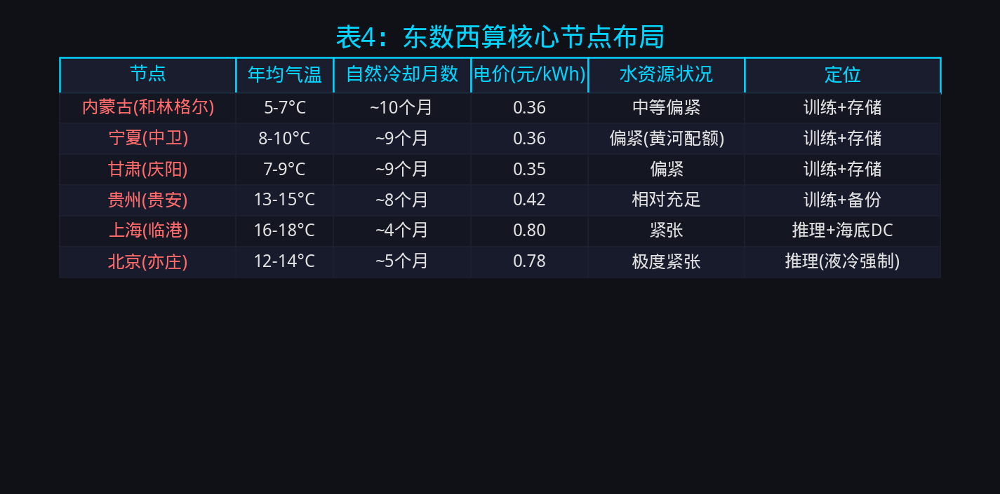
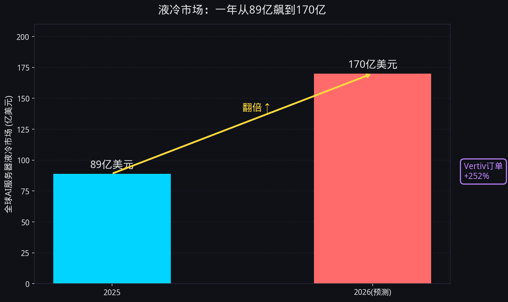
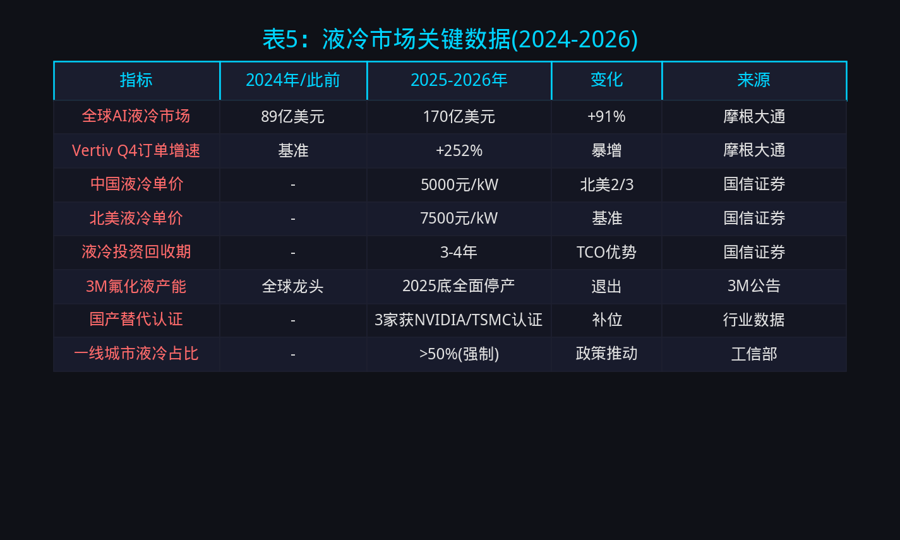
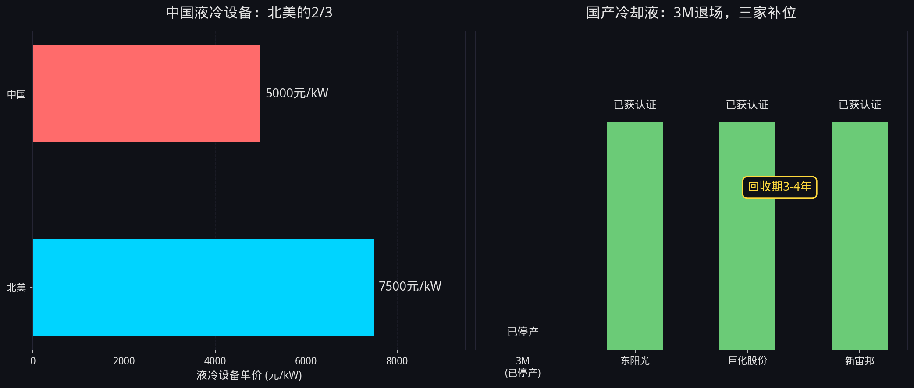

小K·AI行业数据分析 | 2026.06
AI散热 液冷 数据中心 水危机 东数西算
散热占数据中心建设投资20%，GPU功耗三年翻三倍，80%冷却水蒸发回不来。风冷散不掉，水不够用，两条路堵死只剩液冷。
一、散热——AI行业最被忽略的账单你跟AI聊5分钟，大概用掉一瓶矿泉水的散热用水。不是电，是水。
所有人都在盯着AI算力够不够、电力跟不跟得上，但有一条账单几乎没人算过——散热。这可不是一笔小账：散热设备占数据中心建设投资的20%。什么概念？建一个数据中心，每花100块，有20块是散热。电费呢？运营成本里只占5%左右。也就是说，一次性投入里散热是电费的4倍。
这不是一个比例问题，是一个认知偏差问题。行业关注度的分布和实际成本的分布完全倒挂——所有人盯着电费，但真正砸大钱的是散热。而且散热最贵的不是设备，是水。
为什么散热会被忽略？因为电是显性成本——每月电费单写得很清楚，千瓦时，一度多少钱，算得明明白白。散热是隐性成本——建设期一次性砸进去，藏在"基础设施投资"这个大筐里，很少有人单独拆出来看。水更是隐性中的隐性——取水许可、蒸发损耗、间接用水，这些数字分散在不同维度的报告里，没人把它们拼在一起。
但当你把这些数据拼在一起的时候，这张"散热账单"的规模会让人倒吸一口凉气。
本报告从芯片功耗、散热投资、水资源约束、政策调控、市场机会五个维度，拆解AI行业最被忽略的这笔账。


GPU功耗正在以摩尔定律都无法解释的速度飙升。
英伟达H100是700瓦。B200是1000瓦。下一代Rubin直接飙到2300瓦——最高配3700瓦。3700瓦什么概念？一个家用电磁炉开最大档是2200瓦，Rubin比电磁炉还热70%。而这块芯片的面积只有一张信用卡大小，热密度达到了传统CPU的5-8倍。


这个功耗曲线不是线性的，是指数级的。从H100到B200，功耗增长43%；从B200到Rubin，功耗增长130%。三年时间，GPU功耗翻了三倍还多。这意味着什么？意味着风冷已经散不掉了。
风冷的物理极限很清楚：空气的比热容是水的1/4000，传热效率天生就有天花板。当前最先进的风冷方案——行级空调+封闭冷通道+变频风机——在单机柜功耗15kW以下还能应对，超过20kW就开始力不从心，30kW以上基本无解。而一台搭载8颗Rubin的服务器，单机功耗就接近20kW。一个42U机柜塞4-6台，整机柜功耗轻松突破80-120kW。
2026年3月，英伟达在GTC大会上宣布Rubin全面采用液冷方案，不再提供风冷选项——全球最大的GPU厂商亲自给风冷判了死刑。这不是选配，是强制。
微软的案例更具冲击力：花10亿美元把已经建好的风冷机房拆了改液冷。不是因为想改，是因为风冷已经压不住发热，不改机器就跑不了。10亿美元是沉没成本——建了、拆了、重建了，全部因为散热方案选错了。
风冷的黄昏已经到了。不是"可能不行"，是"物理上散不掉"。
三、散热占建设投资20%拆开数据中心的账本，你会发现一个反直觉的事实：散热是建设期最大的单项支出之一。
根据世界经济论坛（WEF）2026年1月的报告，散热设备占数据中心建设总投资的20%。而Uptime Institute的行业基准数据显示，电费只占运营成本的5%左右。如果把建设投资和运营成本做一个总账——每花100块建设费，有20块是散热；每花100块运营费，只有5块是电费。散热的一次性投入是电费持续支出的4倍。
这还只是设备成本。如果算上散热相关的配套——冷却塔、冷水机组、水泵、管道、水处理系统——实际占比可能超过25%。为什么这么贵？因为散热是一个系统工程，不是装几台风扇就完了：
但液冷比风冷更贵——初始投资是风冷的1.5到2倍。这似乎是个悖论：散热已经够贵了，换液冷更贵，为什么还要换？
答案在TCO（全生命周期成本）。液冷虽然初始投资高，但散热效率更高，PUE（电源使用效率）更低。一个典型的对比：风冷机房PUE 1.4-1.5，液冷机房PUE 1.1-1.2。PUE每降低0.1，意味着每年省下约7%的电费。3到5年，省下的电费就把初始投资差价覆盖回来了。
所以液冷不是更贵，是"先贵后省"。但这个逻辑有一个前提：你得有足够的水来支撑液冷系统运转。而这个前提，正在变得越来越不确定。
四、水才是真正的硬约束散热最贵的不是设备，是水。
这听起来很反直觉。水不是拧开水龙头就有吗？我家的蓄水池不是够用吗？不一样。你家用水，洗完澡水进下水道，处理一下还能循环利用。但数据中心用的冷却水，80%直接蒸发到空气里了——变成蒸汽，回不来了。不是脏了不能用的那种"废水"，是物理上消失了，变成云了。你家蓄水池再大，水蒸发完就空了，还得重新灌。


对比一下就明白了：居民用水只有约10%通过蒸发消耗，90%可以处理后循环；而数据中心冷却水80%蒸发掉，只有20%回流。这意味着数据中心的每一滴冷却水，基本都是"一次性"的——用了就没了。
那到底要多少水？大连有一座中型AI算力中心，2025年全年用水3000吨。2026年上半年算力需求涨了60%，结果半年用水量就追平了去年全年——当地水务部门直接下达了用水限额整改通知。一个中型数据中心就这样了，那些超大型呢？
全球的案例更加触目惊心：
还有一个更隐蔽的账：发电厂为数据中心供电消耗的间接用水。根据劳伦斯伯克利国家实验室（LBNL）的研究，间接用水最高是数据中心直接用水的12倍。也就是说，你只看到数据中心在喝水，没看到给它发电的火电厂也在疯狂烧水。AI的全生命周期用水量，比你看到的大一个数量级。
而且有一个关键区分：训练用水和推理用水。AI推理用水占AI总用水量的80%到90%——训练一次就结束了，但推理是7×24小时持续的。越多人用AI，水就越蒸发，回不来。
五、南水北调能调，数据中心的水不能调你肯定要问：南水北调都能搞，水怎么就不能调到数据中心了？
能调，但代价完全不一样。
南水北调，规划50年，投资5000亿，调的是4亿人的喝水和种地用水——这是保命的。数据中心的冷却水是工业用水，每吨水的蒸发都是净损失，调过去蒸发掉还要再调，是个无底洞。
更关键的是物理约束：输水管道的建造成本是同距离输电的10倍以上。每多调一公里，水就在管道里蒸发损耗一部分。电送1000公里损耗6%，水送1000公里光蒸发和渗漏就丢一大截。
这不是一个意愿问题，是一个热力学问题。水在管道里流动就会蒸发，就会渗漏，就会与管壁发生化学反应——这些都是不可逆的物理损耗。电在导线里传输也有损耗，但至少不会"凭空消失"。
S&P Global 2025年9月的报告指出，全球43%的数据中心位于高水压区域——也就是水资源已经紧张的地方。这些数据中心不是因为不知道缺水才建在那的，是因为那里靠近用户、靠近网络枢纽、靠近现有的电力基础设施。但现在，水资源的约束正在把这些优势变成劣势。
内华达州已经立法禁止新建数据中心使用蒸发冷却。智利的6座数据中心被调查从湿地抽水。爱尔兰的都柏林因为数据中心用水激增，开始限制新数据中心的建设许可。全球范围内，"水"正在成为数据中心选址的第一否决项。
所以，南水北调能调，数据中心的水不能调——不是因为技术上做不到，而是因为经济上不可行、物理上不划算。水不能搬，那只能搬数据中心。
六、东数西算：中国解法水不能搬到数据中心旁边，那就把数据中心搬到水够用、气温低的地方。这就是中国的"东数西算"。

东数西算的核心逻辑：西部有三大优势——电便宜、气温低、有余水。内蒙古、宁夏、甘肃，一年有近10个月不用开水冷，靠自然风就能散热。内蒙古电价0.36元/度，上海0.8元/度，差了一倍多。散热成本更低——冬天零下20度，空气就是天然冷源。
但这不是完美解法。西部有两个约束：
某省会城市想落地一个超大型AI训练基地，取水评估没过，项目直接被调走。不是不想建，是当地水不够撑。西北地区的年均降水量只有200-400毫米，蒸发量却高达1500-2500毫米——入不敷出。数据中心虽然比蒸发冷却省水，但依然需要冷却液和补充水，在极端干旱地区，这些水从哪来？
训练对延迟不敏感——把大模型放在内蒙古训完再搬回来。但推理对延迟极度敏感——你问ChatGPT一个问题，等2秒可以，等10秒就关了。所以推理节点必须靠近用户，放在东部沿海。但东部恰恰是缺水又缺电的地方。
中国的解法是"训推分离"——训练放西部，推理留东部。训练是集中式的大任务，延迟无所谓；推理是分布式的小任务，延迟决定体验。但这个解法的前提是：推理节点的散热问题得靠液冷解决，因为东部既缺水又缺电，不可能用传统的蒸发冷却。

上海走得更远——把数据中心沉到海底。15度的海水循环散热，全程不消耗淡水。PUE低于1.15，比最先进的陆地液冷还低。这不是概念，是已经在运行的项目。
东数西算不是万能药，但它揭示了一个核心原则：AI基础设施的选址，第一约束不是电，不是网，而是水。谁先把水的问题解决——不管是搬到水多的地方，还是用不需要水的散热方案——谁就掌握了AI基础设施的主动权。
七、液冷市场一年翻倍，国产替代加速散热这条赛道，需求不是预测出来的，是芯片发热和水不够这两件事同时逼出来的。
英伟达Rubin今年秋季量产，直接拉动液冷需求。英伟达官方液冷合作伙伴Vertiv去年四季度订单暴增252%。全球AI服务器液冷市场从89亿美元飙到170亿美元——一年翻倍，这还是保守估计。

液冷的核心材料是冷却液。传统的氟化液市场长期被3M垄断，但3M因为PFAS（全氟/多氟烷基物质）环保诉讼，2023年达成和解协议，2025年底到期全面停产氟化液。全球最大的氟化液供应商退出市场，留下一个巨大的真空。
中国厂商直接补位。东阳光、巨化股份、新宙邦拿下了英伟达、台积电、阿里的冷却液认证。这不是低端替代——氟化液的技术门槛极高，纯度要求达到ppb（十亿分之一）级别，全球之前只有3M和少量日本厂商能做到。中国三家在3M退出后18个月内完成认证，速度超出预期。
价格优势更明显：中国液冷设备单价约5000元/kW，北美约7500元/kW，中国只有北美的三分之二。投资回收期3到4年——这意味着你今天投的液冷设备，3年后省下的电费就够回本了。
政策也在全力推动。北上广深要求液冷机柜占比超过50%。上海更进一步——海底数据中心，全程不消耗淡水。工信部2025年发布的《新型数据中心发展指导意见》明确提出：新建大型数据中心PUE不得高于1.25，改造后不得高于1.3。要达到这个指标，液冷几乎成了唯一选项。

八、结论这笔账算到最后，图景很清晰：
风冷到液冷的切换不是选择，是必然。原因很简单：两条路都被堵死了。
第一条路：继续用风冷。堵死了。芯片太热了，Rubin 3700瓦，单机柜轻松过百千瓦，风冷物理上散不掉。英伟达已经不给风冷选项了，微软花10亿改液冷——不是趋势预判，是生存刚需。
第二条路：继续用蒸发冷却。堵死了。水太少了，80%蒸发回不来，Google用掉城镇29%的水，大连中型算力中心半年追平全年用水量。内华达州直接禁了，智利从湿地抽水被调查。水资源约束从"未来风险"变成了"当下红线"。
两条路都走不通，只剩液冷。液冷散热效率是风冷的3-5倍，不需要大量蒸发用水（冷板式液冷几乎零耗水），PUE可以压到1.1以下——这是风冷和蒸发冷却都做不到的。
但液冷也有前提：冷却液供应。3M因环保退出了，国产三家已经补上了位。东阳光、巨化、新宙邦拿到英伟达和台积电认证，价格只有北美三分之二。供应链的安全，在这条赛道上，中国反而比美国更有保障。
散热这条赛道，需求不是预测出来的，是芯片发热和水不够这两件事同时逼出来的——确定性比任何行业趋势都硬。芯片每年功耗翻倍，水每年更缺——这两个变量只会加强，不会减弱。
免责声明：本内容依据公开信息与研究报告数据，仅对产业经营层面梳理，不构成任何投资建议。
延伸阅读本文聚焦AI散热的投资构成与水资源约束。如果你想了解AI算力底层的电力成本——ChatGPT一天85万度电，中美两条电力策略谁走得通，请看：《AI的电力账单：谁先搞定电，谁就赢了AI》
关于7250亿资本支出的利润分布与泡沫风险，请看：《AI算力的钱流向哪里？7250亿资本支出拆解》
参考来源| 数据点 | 来源 |
|---|---|
| 散热占数据中心建设投资20% | WEF |
| 电费占运营成本5% | Uptime Institute |
| GPU功耗演进H100→B200→Rubin | 老五测评 |
| 英伟达Rubin全面液冷 | GTC 2026.03 |
| 微软10亿美元改液冷+液冷TCO | Introl |
| 间接用水是直接12倍 | LBNL |
| Google Oregon占城市29%用水 | DC Pulse |
| 智利6座数据中心抽水+千年干旱 | IT之家 |
| 内华达禁止蒸发冷却+43%DC高水压区 | S&P Global |
| AI推理用水占80-90%+大连案例 | 新浪财经 |
| 数据中心蒸发80%取用水 | Engineering Junkies |
| Vertiv订单+252%+全球液冷市场89→170亿美元 | 摩根大通/茅小东 |
| 中国液冷单价5000元/kW+回收期3-4年 | 国信证券 |
| 3M因PFAS环保诉讼被迫停产氟化液 | 3M官方公告 |
| 东阳光/巨化/新宙邦认证 | 佰驰通信 |
| 上海海底数据中心PUE<1.15+海水散热 | 新浪财经/央视财经 |
本内容由 Coze AI 生成，请遵循相关法律法规及《人工智能生成合成内容标识办法》使用与传播。
本内容由 Coze AI 生成
← 返回首页